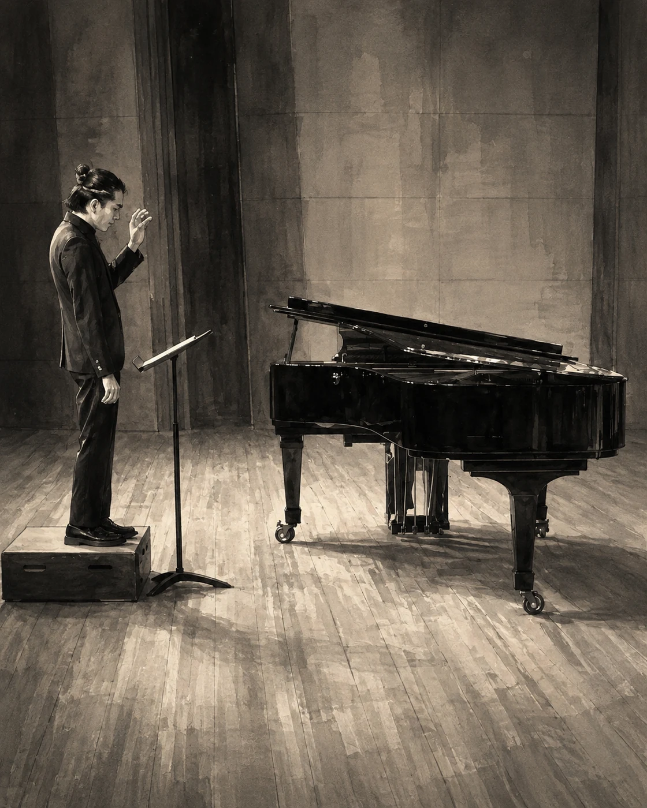

LYRICIST / COMPOSER / MUSIC EDUCATOR
思いあふれて、音になるまで。
校歌、合唱、吹奏楽。人と言葉に向き合いながら、教育の現場と創作のあいだで音楽をつくっています。

SCROLL
COMING / 2026
発表まで
あと—日
LYRIC BOX / CHORAL FRAGMENTS
言葉を、
ふたつ。
合唱作品の歌詞を、短い言葉の断片にして収めた箱。別々の作品からふたつの言葉が、偶然ここで出会います。
472FRAGMENTS
11POEMS
TOPICS
公開・更新情報
SPECIAL THANKS
過去のお知らせを表示
VOICE
VOICE BOXにコメントが届き、「VOICES / 届いた言葉」の掲載を開始しました。
WEBSITE
Official Websiteを公開しました。
CHORAL
《夏を吸い込んで》《春にあふれて》を作品アーカイブに追加。
UPDATE
「音楽の風景」を新しい作品順に変更。歌詞とLYRIC BOXのシェア機能を見やすく調整。
CHORAL
《All around you》の歌詞を「音楽の風景」に追加。令和8年度 足立区連合音楽会にて演奏予定。
FEATURED RECORDING / 正式ライブ音源
《出会い》
北千住イーストゲート合唱団
2024年7月15日 海の日ジョイントコンサート
当日の合唱演奏です。制作デモとは異なります。